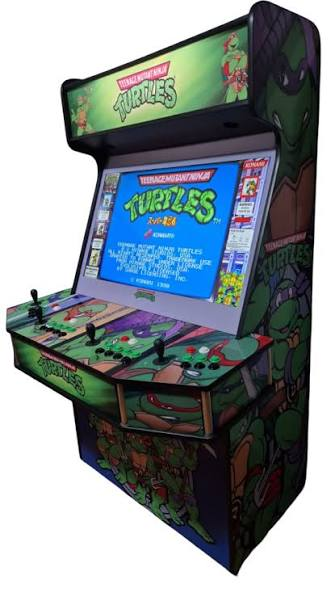
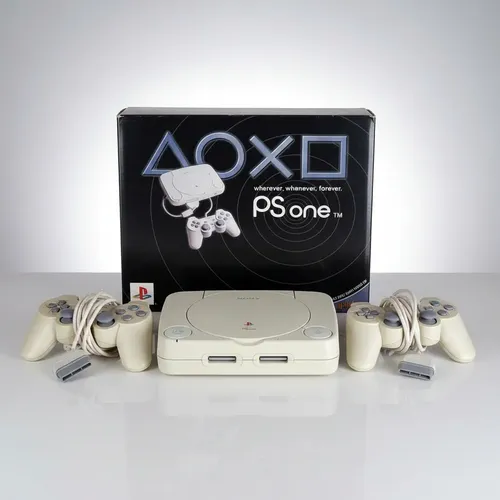

O surgimento dos videogames
A história dos videogames começou com experiências tecnológicas realizadas em meados do século XX. Em 1958, o físico William Higinbotham criou Tennis for Two, um jogo eletrônico simples que simulava uma partida de tênis. Em 1972, o lançamento do Magnavox Odyssey ajudou a levar os videogames para dentro das casas.
Era de ouro dos Fliperamas
Durante as décadas de 1970 e 1980, os fliperamas se tornaram muito populares. Jogos como Pac-Man, Space Invaders e Donkey Kong conquistaram jogadores e ajudaram a transformar os videogames em uma forma de entretenimento mundial.

A chegada dos consoles domésticos
Com o crescimento da indústria, empresas como Atari e Nintendo popularizaram os consoles domésticos. Os jogadores passaram a ter a oportunidade de jogar em suas próprias casas, com títulos que marcaram gerações, como Super Mario Bros.
A evolução dos gráficos e do 3D
Na década de 1990, os gráficos tridimensionais ganharam espaço. Consoles como o PlayStation e o Nintendo 64 permitiram mundos mais detalhados, novas formas de jogar e experiências cada vez mais imersivas.

Os videogames na atualidade
Atualmente, os videogames oferecem gráficos avançados, jogos online, realidade virtual e experiências compartilhadas com pessoas do mundo inteiro. Consoles, computadores e dispositivos móveis continuam ampliando as possibilidades dos jogos eletrônicos.